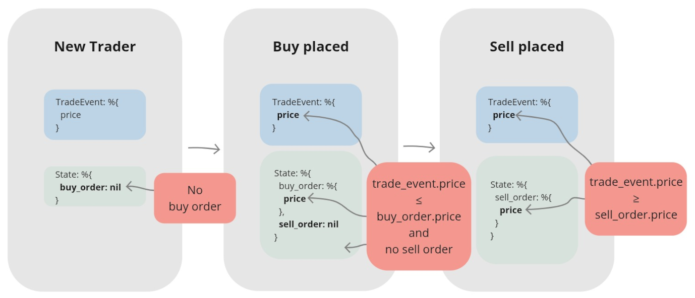

Chapter 2 Creating a Naive Trading Strategy
In this chapter, we’ll build our first automated trading strategy. We’ll start with a naive version. It won’t be smart, but it will serve as a great way to demonstrate valuable Elixir concepts, especially how processes can manage and use their internal state.
Important: This example connects to Binance and places real trades with cryptocurrency.
If you’d rather not use real funds, you’re in luck. In Chapter 4, we’ll build a mock of the
Binance module that will let us run the code without an actual exchange account.
2.1 Objectives
- Create another supervised application inside our umbrella for our trading strategy.
- Implement functions (
GenServercallbacks) that react to trade events based on the trader’s state. - Connect the streamer and trader applications so events can flow between them.
2.2 Initialization
To implement our naive strategy, we need to create a new supervised application inside our umbrella project:
Now, let’s create the Naive.Trader module inside our new application.
First, create a file named trader.ex in the apps/naive/lib/naive/ directory.
Let’s start with a skeleton of a GenServer:
# /apps/naive/lib/naive/trader.ex
defmodule Naive.Trader do
use GenServer
require Logger
def start_link(args) do
GenServer.start_link(__MODULE__, args, name: :trader)
end
def init(args) do
{:ok, args}
end
endWhy GenServer? Our trader needs to do three things: hold state (current orders), receive messages (trade events), and make decisions based on both. GenServer is the standard OTP building block for exactly this pattern.
Our module uses the GenServer behavior.
While init/1 is the only required callback, implementing start_link/1 is a strong convention
for processes started by a supervisor.
Note that we are using a hardcoded atom name: :trader.
This is simple for a single bot, but it creates a global name conflict -
you cannot start a second trader for a different symbol because the name is already taken.
We’ll learn how to use a Registry to handle multiple dynamic traders in Phase 2.
Finally, we require Logger so we can log information from this module.
Next, let’s define the state for our GenServer process:
# /apps/naive/lib/naive/trader.ex
defmodule State do
@enforce_keys [:symbol, :profit_target, :tick_size]
defstruct [
:symbol,
:buy_order,
:sell_order,
:profit_target,
:tick_size
]
endOur trader needs to know:
- which symbol to trade (a symbol represents a trading pair - for example, “XRPUSDT” means trading XRP against USDT)
- the currently placed buy order, if any
- the currently placed sell order, if any
- profit target (the desired profit percentage for a single trade cycle - one buy and one sell)
- tick_size (a bit of trading jargon that we’ll demystify shortly)
Since our trader can’t function without :symbol, :profit_target, or :tick_size,
we use the @enforce_keys attribute. This prevents us from creating a %State{} struct without these essential
values, ensuring our trader is always properly initialized.
Terminology: Tick size
Each symbol has a different tick size, which represents the smallest acceptable price increment. Think of it like cents for dollars - you can’t price something at $1.234; it must be $1.23 or $1.24. In crypto, BTCUSDT might have a tick size of 0.01, while XRPUSDT might be 0.0001. If you try to place an order at a price that isn’t a multiple of the tick size, Binance will reject it.
You can find more information on Investopedia: https://www.investopedia.com/terms/t/tick.asp. We need to fetch this value from Binance to calculate valid order prices.
Now that we know our GenServer needs these arguments, we can update our start_link/1 and init/1 functions
to pattern match on a map:
# /apps/naive/lib/naive/trader.ex
def start_link(%{} = args) do
...
end
def init(%{symbol: symbol, profit_target: profit_target}) do
...
end2.2.1 Non-blocking Initialization
We could simply fetch the tick_size directly inside the init/1 function. However, there is a catch.
GenServer.start_link/3 is synchronous. It waits for init/1 to return before it gives the PID to the caller (which is often a Supervisor).
If we perform a network request to Binance inside init/1, and that request takes 5 seconds (or fails!),
our entire application startup is blocked for that duration. If we had 100 traders starting up, and each took a few seconds,
our application would effectively hang or crash due to timeout.
To solve this, we’ll use handle_continue/2, a callback added in OTP 21 specifically for this scenario.
It allows us to return immediately from init/1 (unblocking the supervisor) and then perform further initialization work asynchronously.
Let’s update our init/1 to schedule this continuation:
# /apps/naive/lib/naive/trader.ex
def init(%{symbol: symbol, profit_target: profit_target}) do
symbol = String.upcase(symbol)
Logger.info("Initializing new trader for #{symbol}")
{:ok,
%State{
symbol: symbol,
profit_target: profit_target,
tick_size: nil
}, {:continue, :fetch_tick_size}}
endNotice the return tuple: {:ok, state, {:continue, :fetch_tick_size}}.
This tells the GenServer: “I’m successfully started, but before you process any messages, run the logic associated with :fetch_tick_size.”
Now we need to implement the handle_continue/2 callback to do the actual work:
# /apps/naive/lib/naive/trader.ex
def handle_continue(:fetch_tick_size, %State{symbol: symbol} = state) do
tick_size = fetch_tick_size(symbol)
{:noreply, %{state | tick_size: tick_size}}
endA straightforward way to connect to the Binance REST API is by using the binance package.
Following the installation instructions in the library’s documentation on GitHub, we’ll start by adding binance to the deps in /apps/naive/mix.exs:
# /apps/naive/mix.exs
defp deps do
[
{:binance, "~> 1.0"},
{:decimal, "~> 2.0"},
{:streamer, in_umbrella: true}
]
endAlong with the :binance library, we’re also adding :decimal and our own :streamer application.
The decimal library is essential for calculating prices,
as using standard floats would lead to precision errors common in financial calculations.
Lastly, we include our own :streamer application (from Chapter 1) because the naive application will
need to handle the %Streamer.Binance.TradeEvent{} struct it produces.
We need to run mix deps.get to install our new dependencies.
Now, let’s return to the Naive.Trader module and implement the logic for fetching the tick_size from Binance:
# /apps/naive/lib/naive/trader.ex
defp fetch_tick_size(symbol) do
{:ok, exchange_info} = Binance.get_exchange_info()
exchange_info
|> Map.get(:symbols)
|> Enum.find(&(&1["symbol"] == symbol))
|> Map.get("filters")
|> Enum.find(&(&1["filterType"] == "PRICE_FILTER"))
|> Map.get("tickSize")
endWe use get_exchange_info/0 to fetch all exchange information, then pipe the result through
a series of functions. This pipeline drills down through a complex nested data structure
to extract the exact tickSize value for our symbol.
The complete data structure is available in the official Binance API documentation: https://github.com/binance/binance-spot-api-docs/blob/master/rest-api.md#exchange-information. To simplify, the part of the data structure we care about looks like this:
{:ok, %{
...
symbols: [
%{
"symbol": "XRPUSDT",
...
"filters": [
...
%{"filterType": "PRICE_FILTER", "tickSize": "0.01000000", ...}
],
...
}
]
}}A Note on Error Handling: For this naive strategy, we’ll assume the API call to Binance always succeeds.
In a production application, you would need to handle potential errors, perhaps by using a case statement
to pattern match on both {:ok, data} and {:error, reason} tuples.
2.3 How the Trading Strategy Will Work
Our trader maintains an internal state that tracks its progress through the trade cycle. Think of it as a simple state machine with three states:

Take a moment to study this diagram. We’ll refer back to it as we implement each state transition. If you ever get lost in the code, this visual map will help you find your bearings.
Our trader reacts to trade events, making decisions based on its current state and the event’s data, operating in one of three states:
2.3.1 State 1: Ready to buy
Initially, the trader has no open orders. We can identify this state by pattern matching on buy_order: nil.
When the trader receives its first trade event,
it will use the event’s price to place an initial buy order.
2.3.2 State 2: Buy order placed
After placing a buy order, the trader compares its price to the price from incoming trade events. When a trade event arrives with a price at or below our buy order’s price, we’ll assume our order has been filled (as long as a sell order hasn’t already been placed). The trader is now ready to place a sell order.
A Note on Simplification: For this naive strategy, we’ll assume an order is filled as soon as the market price reaches our order’s price. A production-ready system would need to handle complexities like partial fills, but this simplification keeps us focused on our current learning objectives.
2.3.3 State 3: Sell order placed
This state mirrors the previous one. The trader compares the price from incoming trade events to its sell order’s price. When a trade event arrives with a price at or above our sell order’s price, we assume the order is filled. This completes the trade cycle. With the trade cycle complete, the trader’s job is done, and the process terminates.
2.3.4 Implementation of the First Scenario
Enough theory! :) Back in the editor, we’ll start with the first scenario.
Since we’ll be pattern matching on %Streamer.Binance.TradeEvent{} structs frequently,
let’s alias it first to keep our code clean.
Architecture Note - Guard Convenience vs. Precision: In the handle_cast/2 clauses below,
we use Elixir guards (like when trade_price <= buy_price) to keep our state machine logic concise.
However, guards only work with basic types like floats. In production, you’d move these comparisons
into the function body and use Decimal.compare/2 instead - something like Decimal.compare(trade_price, buy_price) != :gt.
This avoids floating-point drift, where 0.1 might be stored as 0.09999999999999999.
To handle a “new” trader that is ready to buy, we’ll pattern match on a state where buy_order is nil:
# /apps/naive/lib/naive/trader.ex
def handle_cast(
%TradeEvent{price: price},
%State{symbol: symbol, buy_order: nil} = state
) do
quantity = "100" # <= Hardcoded until chapter 7
Logger.info("Placing BUY order for #{symbol} @ #{price}, quantity: #{quantity}")
{:ok, %Binance.OrderResponse{} = order} =
Binance.order_limit_buy(symbol, quantity, price, "GTC")
{:noreply, %{state | buy_order: order}}
endFor now, we’ll hardcode the quantity. This keeps the chapter focused. Don’t worry - we’ll refactor this in a later chapter.
Pattern matching on buy_order: nil ensures this clause only runs for a trader
that hasn’t placed an order yet. It’s crucial that we return the updated state.
If we returned the original state, buy_order would remain nil, and our trader would go on a
shopping spree - placing a new buy order for every trade event it receives!
2.3.5 Implementation of the Second Scenario
Now, let’s implement the logic for when the buy order is filled.
We’ll add a handle_cast/2 clause that matches when two conditions are met:
the incoming trade price is less than or equal to our buy price, and a sell order hasn’t been placed yet.
# /apps/naive/lib/naive/trader.ex
def handle_cast(
%TradeEvent{
price: trade_price
},
%State{
symbol: symbol,
buy_order: %Binance.OrderResponse{
price: buy_price,
order_id: order_id,
orig_qty: quantity,
transact_time: timestamp
},
sell_order: nil,
profit_target: profit_target,
tick_size: tick_size
} = state
) when trade_price <= buy_price do
{:ok, %Binance.Order{} = current_buy_order} =
Binance.get_order(
symbol,
timestamp,
order_id
)
buy_order_response = convert_order_to_order_response(current_buy_order)
sell_price = calculate_sell_price(buy_price, profit_target, tick_size)
Logger.info(
"Buy order filled, placing SELL order for " <>
"#{symbol} @ #{sell_price}, quantity: #{quantity}"
)
{:ok, %Binance.OrderResponse{} = order} =
Binance.order_limit_sell(symbol, quantity, sell_price, "GTC")
{:noreply, %{state | buy_order: buy_order_response, sell_order: order}}
endWe’ll implement the sell price calculation in a helper function that takes the buy price, profit target, and tick size as arguments.
When the market price meets our buy order’s price, we assume the buy order has been filled. We can now place a sell order using the quantity from our original buy order and a newly calculated sell price. Again, it’s crucial to return the updated state. Otherwise, the trader would place a new sell order for every subsequent trade event.
When the market price meets our buy price, we call Binance.get_order/3
to fetch the latest order details from the exchange.
While we optimistically assume the order is filled, this call ensures our local state
is updated with the definitive information from Binance.
Keeping our local state synchronized with the exchange is a critical practice that will
become even more important in later chapters.
We need to convert the returned %Binance.Order{} struct back into a %Binance.OrderResponse{}.
We do this because our other handle_cast/2 clauses specifically pattern match on %Binance.OrderResponse{}.
The structs are nearly identical - the main difference is the timestamp field’s name (time vs. transact_time).
We can easily convert from one to the other with this helper function at the bottom of the Naive.Trader module:
# /apps/naive/lib/naive/trader.ex
defp convert_order_to_order_response(%Binance.Order{} = order) do
response = struct(Binance.OrderResponse, Map.from_struct(order))
%{response | transact_time: order.time}
endCalculating the sell price requires precise math, so we’ll use the excellent Decimal library. Let’s alias it at the top of the file:
A Note on Precision: Financial calculations require high precision.
Standard floats can introduce tiny rounding errors that can compound over time.
The Decimal library solves this.
While we’ll use D.from_float/1 below, a production-ready system would handle prices
as strings (e.g., "123.45") and parse them with Decimal.new/1.
This avoids any potential precision loss that can occur with floats.
To calculate the correct sell price, we can use the following formula:
# /apps/naive/lib/naive/trader.ex
defp calculate_sell_price(buy_price, profit_target, tick_size) do
# Calculate a sell price that:
# 1. Accounts for entry and exit fees
# 2. Applies the desired profit target
# 3. Is rounded down to the nearest valid tick_size
#
# Example:
# buy_price = 100.0
# profit_target = 0.02 # 2%
# fee = 0.1%
#
# entry price incl. fee: 100.0 * 1.001 = 100.1
# target price: 100.1 * 1.02 = 102.102
# exit price incl. fee: 102.102 * 1.001 = 102.204102
#
# tick_size = 0.01
# 102.204102 → 102.20
fee = D.new("1.001")
buy_price
|> D.from_float()
|> D.mult(fee) # buy price incl. fee
|> D.mult(D.add(D.new(1), profit_target))# apply profit target
|> D.mult(fee) # sell-side fee
|> D.div_int(tick_size) # round down to tick size
|> D.mult(tick_size)
|> D.to_float()
endFirst, we account for the trading fee.
Binance’s standard trading fee is 0.1%. To find our break-even point, we multiply by 1.001 -
that’s 1 (the original price) plus 0.001 (the 0.1% fee).
For example, if we bought at $100, we actually paid $100.10 after fees.
We use this to calculate original_price, which is our true cost basis.
Next, we increase the original paid price by the profit target. This gives us the net_target_price.
Since we’ll also be charged a fee on the sell order, we must account for it again. We multiply our net_target_price by the fee to get the final gross_target_price.
Finally, we must align our price with the symbol’s tick_size.
Binance will reject an order if its price isn’t a multiple of this value
(e.g., you can’t price something at $1.234 if the tick size is $0.01).
This final step uses integer division to round the gross_target_price down to
the nearest valid increment allowed by the tick_size.
2.3.6 Implementation of the Third Scenario
Now for the final state: handling a filled sell order.
# /apps/naive/lib/naive/trader.ex
def handle_cast(
%TradeEvent{
price: trade_price
},
%State{
symbol: symbol,
sell_order: %Binance.OrderResponse{
price: sell_price,
order_id: order_id,
transact_time: timestamp
}
} = state
) when trade_price >= sell_price do
{:ok, %Binance.Order{} = current_sell_order} =
Binance.get_order(
symbol,
timestamp,
order_id
)
sell_order_response = convert_order_to_order_response(current_sell_order)
Logger.info("Trade finished, trader will now exit")
{:stop, :normal, %{state | sell_order: sell_order_response}}
endWhen a trade event’s price is greater than or equal to
the sell order’s price, we consider the order filled.
We fetch the final state of the sell order one last time (a step that will prove useful in a later chapter)
and then return a {:stop, ...} tuple. This special tuple tells the GenServer to shut down gracefully,
completing its lifecycle.
2.3.7 Implementation of the Fallback Scenario
Finally, we need a catch-all handle_cast/2 clause.
This function will handle any %TradeEvent{} that doesn’t match the specific conditions in the clauses above
(for example, when the market price is moving between our buy and sell prices).
By simply returning the state unchanged, we effectively ignore these events:
2.3.8 Updating the Naive interface
Next, we’ll update the public interface of our naive application.
By modifying the Naive module, we can create a helper function to send events directly to our trader process:
# /apps/naive/lib/naive.ex
defmodule Naive do
@moduledoc """
Documentation for `Naive`.
"""
alias Streamer.Binance.TradeEvent
def send_event(%TradeEvent{} = event) do
GenServer.cast(:trader, event)
end
endWe can do this because we registered the trader process with the name :trader in its start_link/1 function.
This allows us to send messages using the name instead of having to know the process’ PID.
2.3.9 Updating streamer app
To keep things simple, we’ll connect our applications by having the Streamer call the Naive module directly.
# /apps/streamer/lib/streamer/binance.ex
defp process_event(%{"e" => "trade"} = event) do
...
Naive.send_event(trade_event)
endThis creates tight coupling between the streamer and naive applications.
Don’t worry - this is a temporary shortcut.
We’ll refactor this in the next chapter, as these applications ideally shouldn’t have direct knowledge of each other.
2.3.10 Configuring Binance Access
Inside the config directory of our umbrella project, we’ll create a new file named secrets.exs.
We will use this for our Binance account access details.
# /config/secrets.exs
import Config
config :binance,
api_key: "YOUR-API-KEY-HERE",
secret_key: "YOUR-SECRET-KEY-HERE"We don’t want to commit this file to version control, so we add it to our .gitignore:
Finally, we update our main config file to include it using import_config:
# /config/config.exs
...
# Import secrets file with Binance keys if it exists
if File.exists?("config/secrets.exs") do
import_config("secrets.exs")
endReminder: This test places real trades. You’ll need at least 20 USDT in your Binance wallet. If you skipped setting up Binance credentials earlier, no problem - just read through this section and run it yourself after Chapter 4, when we’ll have a mock that doesn’t require real funds.
2.3.11 Test run
Now it’s time to put our implementation to the test.
We’ll use a negative profit_target to ensure the trade cycle completes quickly.
This will result in a small, controlled loss of around 1%:
$ iex -S mix
...
iex(1)> Naive.Trader.start_link(%{symbol: "XRPUSDT", profit_target: "-0.01"})
13:45:30.648 [info] Initializing new trader for XRPUSDT
{:ok, #PID<0.355.0>}
iex(2)> Streamer.start_streaming("xrpusdt")
{:ok, #PID<0.372.0>}
iex(3)>
13:45:32.561 [info] Placing BUY order for XRPUSDT @ 0.25979000, quantity: 100
13:45:32.831 [info] Buy order filled, placing SELL order for XRPUSDT @ 0.2577, quantity: 100
13:45:33.094 [info] Trade finished, trader will now exitOnce the IEx session starts, we’ll launch the trader process.
We’ll pass it a map containing our symbol and a negative profit_target.
This forces the sell order to be placed at a lower price, ensuring a faster fill for our test
(instead of waiting for the market price to actually rise).
Next, start streaming for the same symbol.
As soon as you do, the streamer will begin sending trade events to the trader process,
triggering the trading logic immediately.
The log output shows our trader placing a buy order at 0.25979 USDT per XRP. Less than 300 milliseconds later, a trade event arrives with a price matching our buy order, causing our strategy to assume the order was filled. The trader then immediately places a sell order at approximately 0.2577 USDT, which is also filled quickly. With the sell order filled, the trader has finished its trade cycle, and the process terminates as designed.
That’s it. Congratulations! You just built and executed your first algorithmic trade.
More importantly, you’ve internalized one of Elixir’s most powerful patterns:
a GenServer that holds state, receives messages, and makes decisions.
This same pattern scales from a single trader to thousands - which is exactly where we’re headed.
In the next chapter, we’ll decouple our applications using PubSub,
removing the tight coupling between streamer and naive that’s been nagging at us.
As a final step, remember to run mix format to keep your code nice and tidy.
The source code for this chapter can be found in the book’s source code repository (branch: chapter_02).